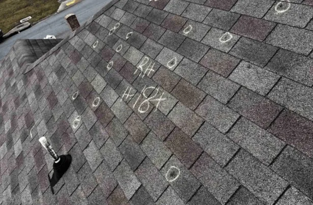

The first step in determining whether it’s time for a roof replacement is understanding your roof’s lifespan. Most roofs are designed to last between 20 and 30 years, depending on the materials used: asphalt shingles, the most common roofing material, typically last about 20 years. In contrast, metal and slate roofs can last up to 50 years or more with proper maintenance.
Knowing the specific materials used in your roof can give you a more precise idea of its longevity and help you plan for future replacements.
Factors Affecting Roof Longevity
Several factors can affect the lifespan of your roof, including:
- Climate: Harsh weather conditions, such as heavy snow, high winds, or intense sunlight, can speed up wear and tear. Frequent temperature fluctuations can cause materials to expand and contract, leading to structural issues.
- Installation Quality: A poorly installed roof may not last as long, even if the materials are high quality. The expertise of the installers and their attention to detail play a significant role in the roof’s performance and durability.
- Ventilation: Proper attic ventilation is crucial in preventing moisture buildup and reducing heat, which can damage roofing materials. A well-ventilated attic can also help regulate indoor temperatures, contributing to overall energy efficiency.
- Maintenance: Regular maintenance and prompt repairs can extend your roof’s life significantly. This includes cleaning gutters, removing debris, and addressing minor issues before they escalate into major problems.
Key Signs It’s Time to Replace Your Roof
Recognizing the early signs of roof damage can save you from more severe issues later on. Here’s what to look out for:
1. Age of the Roof
If your roof is nearing the end of its expected lifespan, it may be time to consider a replacement, even if it appears to be in good condition. An aging roof is more susceptible to sudden failures, and proactive replacement can prevent unexpected leaks or structural damage.
2. Visible Damage
- Shingle Damage: Look for curled, cracked, or missing shingles. Damaged shingles are a clear indication that your roof is vulnerable to leaks, which can lead to water damage within your home.
- Granule Loss: Check your gutters for shingle granules. Excessive granule loss can indicate that your shingles are at the end of their life, reducing their ability to protect your home from the elements.
- Sagging: A sagging roof is a serious issue that often points to structural damage. Immediate action is necessary to prevent further damage and potential safety hazards.
3. Leaks and Water Damage
Water stains on your ceiling or walls can be a sign of a leaking roof. If you notice any signs of water damage, it’s crucial to address the issue promptly to prevent further damage to your home. Persistent leaks can lead to mold growth and compromise the structural integrity of your home.
4. Moss and Mold Growth
While moss and mold may seem minor, they can trap moisture against your roof, leading to damage over time. If you notice significant growth, it may be time to evaluate your roof’s condition. Regular cleaning and maintenance can help prevent these issues from becoming severe.
Conducting a Roof Inspection

Regular inspections are key to maintaining a healthy roof. Here’s a simple roof inspection checklist to follow:
- Check Shingles: Look for any signs of damage or wear. Pay attention to the uniformity of the shingles and any noticeable color changes that could indicate aging.
- Inspect Flashing: Ensure that the metal pieces around chimneys, vents, and skylights are intact and free of rust. Damaged flashing can be a common source of leaks and should be repaired promptly.
- Examine Gutters: Check for shingle granules and ensure gutters are clear of debris. Clogged gutters can cause water to back up and damage your roof or siding.
- Look Inside: Inspect your attic for signs of moisture, mold, or visible light beams coming through the roof. These can be indicators of weaknesses or gaps in the roof structure.
When to Call a Roofing Contractor
While DIY inspections are useful, there comes a time when professional help is necessary. Here’s when to consider calling a roofing company:
- Complex Issues: If you notice complex issues like sagging or extensive leaks, consult a professional. They have the tools and expertise to assess the damage accurately and provide effective solutions.
- Annual Inspections: A professional roofing contractor can provide a comprehensive inspection and catch issues you might miss. They can also offer valuable maintenance tips to prolong your roof’s lifespan.
- Free Roof Inspection Offers: Many roofing companies offer free inspections, which can be a valuable resource for homeowners. Taking advantage of these services can provide peace of mind and help you plan for future maintenance.
The Process of Roof Replacement
If you’ve determined that it’s time for a new roof, here’s what to expect during the replacement process:
1. Selecting Materials
Choosing the right materials is crucial. Consider factors like durability, aesthetic appeal, and budget. Popular options include asphalt shingles, metal, wood, and slate. Each material offers different benefits and drawbacks, so it’s essential to research and select one that aligns with your needs and climate conditions.
2. Removing the Old Roof
The first step in roof replacement is removing the existing roof. This allows the contractors to inspect the underlying structure and make any necessary repairs. It’s an opportunity to address hidden issues that could affect the new roof’s performance.
3. Installing the New Roof
Once the old roof is removed, and any structural issues are addressed, the new roofing materials are installed. This process can take anywhere from a few days to a week, depending on the size and complexity of your roof. Proper installation is critical to ensure the new roof’s longevity and effectiveness.
4. Final Inspection
After installation, a final inspection ensures everything is up to code and the new roof is ready to protect your home. This step verifies that all components are correctly installed and that there are no remaining issues that could compromise the roof’s integrity.
Conclusion
Your roof is a vital part of your home, and knowing when it’s time for a replacement can prevent costly damage and keep your family safe. By understanding the signs of roof damage and conducting regular inspections, you can ensure your roof remains in top condition. When in doubt, don’t hesitate to reach out to a professional roofing contractor, like us at EZ Roofing. Our expertise can guide you in making informed decisions about your roof’s maintenance and replacement.
Give us a call today!